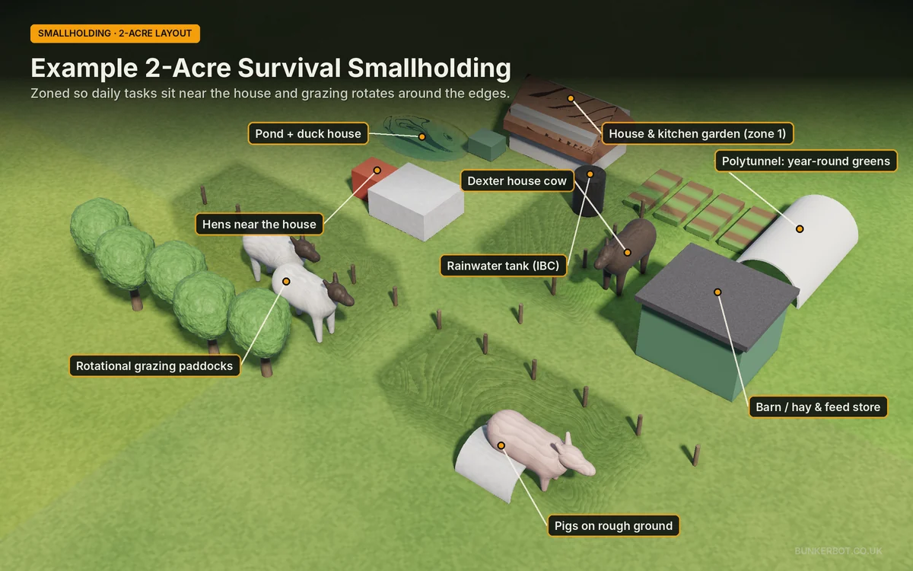
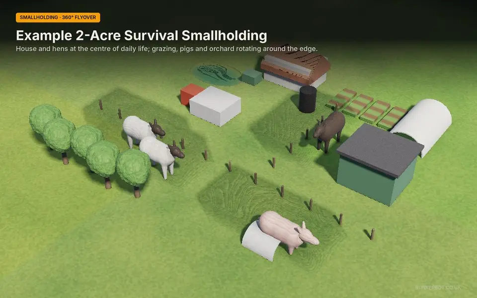
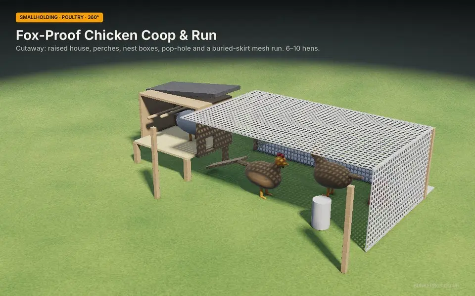
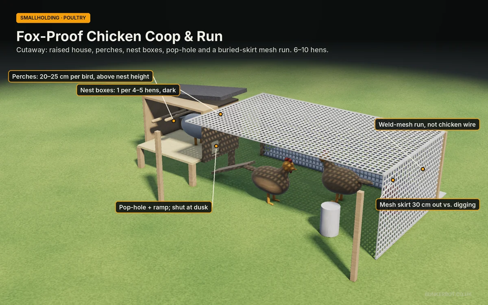
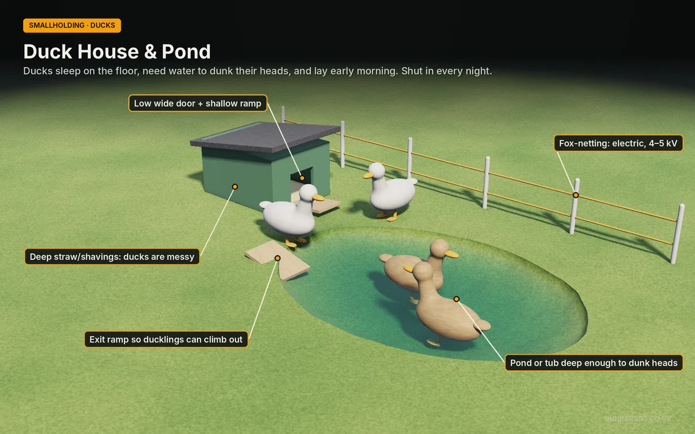
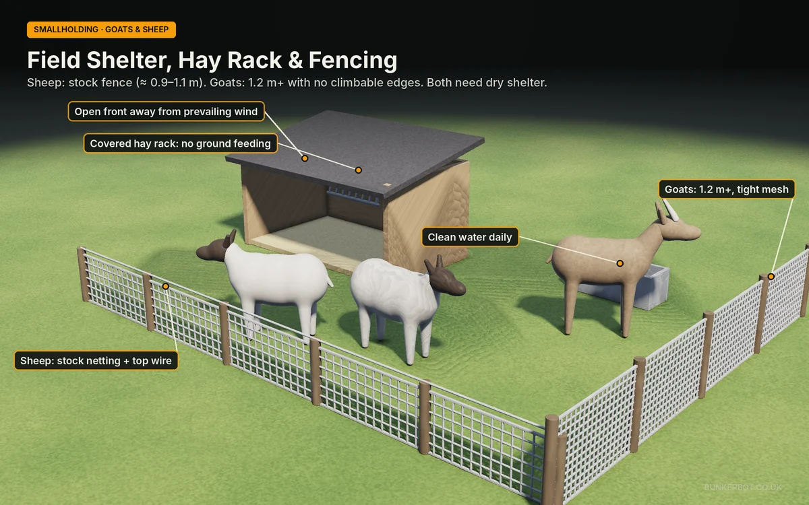
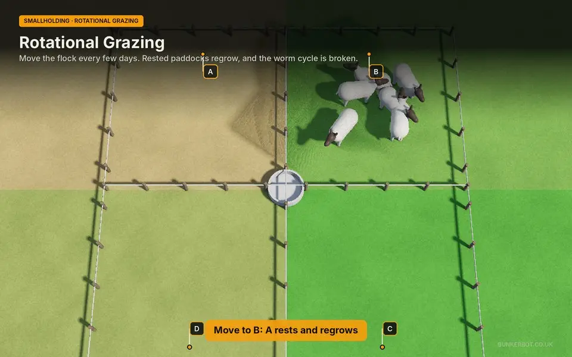
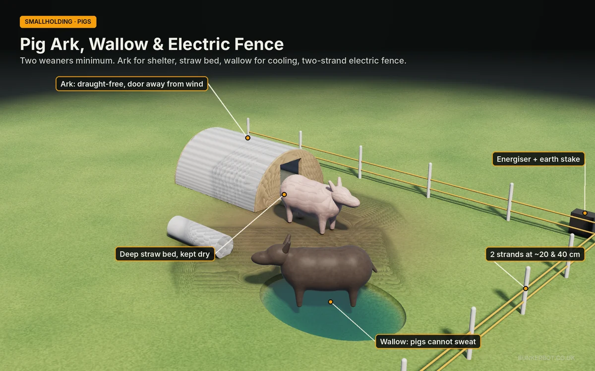

UK Smallholding Livestock
Livestock is stored food that walks, breeds and turns grass into calories.
Start small: hens first, then ducks, then one other species. Most failures come from taking on too much in year one. Register before animals arrive. UK law requires it for every species on this page. Your bottleneck is winter feed and water, not space. Plan for 6 months of hay and feed in storage. This page is UK-specific and complements Animal Husbandry, which covers general chicken, goat and rabbit care, hatching and milking in more depth.


1. UK Legal Basics (all species)
| Requirement | Who | How |
|---|---|---|
| CPH number (County Parish Holding) | Anyone keeping goats, sheep, pigs, cattle (and poultry if 50+, but get one anyway) | Rural Payments Agency (England), Rural Payments Wales, SGRPID (Scotland). Free. |
| Poultry / bird registration | All keepers in GB, even 1 bird, since autumn 2024; review annually | APHA "Kept Bird Register" (England & Wales); Scottish Kept Bird Register (Scotland) |
| Flock/herd number | Sheep & goats | APHA, after you have a CPH |
| Herd mark | Pigs: within 30 days of arrival | APHA. Movements reported on eAML2. |
| Cattle passports & tags | Every bovine | Tag calves and register births within legal deadlines (BCMS/Livestock Information Service); TB testing by area |
| Movement reporting | Sheep, goats, pigs, cattle | England ARAMS (sheep/goats); EIDCymru (Wales); ScotEID (Scotland); standstill rules apply after animals arrive |
| No kitchen scraps | All farmed animals, including backyard hens and pigs | All household kitchen scraps (even from vegan households) and catering waste are illegal to feed. This is the swill ban that followed foot-and-mouth disease. Garden or allotment produce that has never been in a kitchen is OK. |
| Fallen stock | All livestock | Burial is banned in most of the UK. Use a licensed collector (the National Fallen Stock Company scheme). |
| Medicines | All food animals | Keep a medicine record. Observe withdrawal periods before eating meat, milk or eggs. |
| Welfare | All | Animal Welfare Act 2006 + species codes of practice |
During housing orders (common in winter) you must keep birds indoors or under netting and follow biosecurity rules. Report suspected bird flu to APHA immediately.
2. Which Animals? Comparison
open seasons, close seasons and what to sow when are all on one interactive calendar: see Hunting & Trapping: seasons.
| Chickens | Ducks | Goats | Sheep | Pigs | Cows (Dexter) | |
|---|---|---|---|---|---|---|
| Min. land | Garden | Garden + water | 0.25–0.5 acre per 2–3 | 0.25 acre per ewe (lowland) | 0.25 acre per 2 weaners | 1–2 acres per cow + hay ground |
| Start-up cost | £150–600 | £200–600 | £600–2,000 | £500–2,000 | £400–1,200 | £2,500–6,000 |
| Daily time | 15 min | 20 min | 30–60 min (milking) | 10–20 min | 20 min | 30–60 min (milking) |
| Output | Eggs + meat | Eggs + meat | Milk + meat | Meat, wool, milk | Meat + fat | Milk + meat + calf |
| Beginner friendly? | ★★★★★ | ★★★★ | ★★★ | ★★★ | ★★★★ | ★★ |
| Escape artist? | Low | Low | Very high | Medium | Medium (roots under fences) | Low |
| Collapse value | ★★★★★ | ★★★★ | ★★★★★ | ★★★★ | ★★★★ (fat!) | ★★★★★ but hardest to keep |
3. Chickens


Breeds for UK survival
| Breed | Type | Eggs/yr | Dressed weight | Notes |
|---|---|---|---|---|
| Hybrid (Warren, Black Rock) | Layer | 250–320 | Small | Best laying; burn out by year 3; don't go broody |
| Light Sussex | Dual-purpose | 220–260 | 2.5–3.5 kg | Hardy, broody, classic UK dual-purpose |
| Marans | Dual-purpose | 150–200 (dark brown) | 3–3.5 kg | Hardy, good table bird |
| Buff Orpington | Dual-purpose | 150–180 | 3.5–4.5 kg | Excellent broody mothers, calm |
| Welsummer | Layer | 160–200 | 2.5–3 kg | Foragers |
| Ixworth / Dorking | Table | 150 | 3.5–4.5 kg | Heritage UK meat breeds |
8–12 dual-purpose hens + 1 cockerel = self-replacing. Let broody hens hatch 2–3 clutches a year; eat the surplus cockerels at 16–20 weeks.
Housing (6–10 hens)
- House: 0.3–0.4 m² floor per bird, raised off the ground (no rats under, dry floor). Ventilation high up, without draughts at perch level.
- Perches: 20–25 cm per bird, 5 cm wide with rounded edges, higher than the nest boxes.
- Nest boxes: 1 per 4–5 hens, 30×30 cm, dark, lined with straw or shavings.
- Run: 1–2 m² per bird minimum in a fixed run, more if free-ranging. Use weld mesh (13–25 mm, 16-gauge) not chicken wire: foxes and badgers tear chicken wire. Bury a 30 cm mesh skirt outwards, or dig it in 30 cm deep.
- Shut the pop-hole every night. An automatic door (£80–150) means you never forget.
Feed & water (per hen per day)
- Layers pellets/mash ~110–130 g, plus grit (insoluble) and oyster shell (calcium) ad lib.
- Water 250–500 ml (double in hot weather). Keep it from freezing in winter.
- Forage: grass, weeds, insects. Free-ranging cuts feed by 20–30% in summer.
- Collapse feed: wheat, barley, oats (soaked/sprouted), field beans/peas (protein), kale, fodder beet, black soldier fly larvae, worms, meat scraps from your own butchery (fine in a collapse; illegal as "catering waste" now).
Breeding
- Incubation 21 days. Hens begin laying at 18–24 weeks.
- Laying drops in winter (short days): supplementary light to 14 h keeps hybrids laying.
Health watch
Red mite (check perch ends at night; use diatomaceous earth, clean regularly), scaly leg, worms (Flubenvet: check the label for current egg/meat withdrawal periods), Marek's (vaccinated chicks), avian influenza, impacted crop, and foxes, badgers, rats, mink.
Slaughter
Cervical dislocation (see Animal Husbandry for method) or a purpose-made dispatcher. Scald 60–65 °C for 45–60 s, pluck, eviscerate, then rest 24 h chilled before cooking.
4. Ducks

Why ducks
Hardier than chickens in wet UK weather, less prone to red mite, excellent slug and snail control (garden bonus), and some breeds out-lay hens. Duck eggs are richer and good for baking.
| Breed | Eggs/yr | Weight | Notes |
|---|---|---|---|
| Khaki Campbell | 250–320 | 2–2.5 kg | Best laying breed |
| Indian Runner | 180–250 | 1.5–2 kg | Upright, superb slug hunters, can't fly |
| Welsh Harlequin | 200–300 | 2–2.5 kg | Dual-purpose, calm |
| Aylesbury / Pekin | 50–150 | 4–5 kg | Meat; table-ready at 8–10 weeks |
| Muscovy | 60–120 | 3–6 kg | Lean red meat, quiet, excellent mothers (35-day incubation) |
Housing & water
- House: 0.5 m² per duck; floor-level (ducks don't perch); door at least 30 cm wide with a shallow ramp.
- Bedding: deep straw or shavings. Ducks are very wet and messy, so change bedding often.
- Water: ducks must be able to dunk their whole head to clean eyes and nostrils. A pond, child's paddling pool or tub, with an exit ramp. Change it often.
- Shut in every night. Ducks lay early morning, so keep them in until ~9 am to collect eggs.
- Fencing: 1 m is fine for most breeds (clip one wing on lighter breeds). Use electric poultry netting against foxes.
Feed
~150–200 g duck/layers pellets per day, plus forage. Grit available. Ducklings need niacin (add brewer's yeast to chick crumb, or use duckling crumb). Never use medicated chick crumb for ducklings.
Breeding
Incubation 28 days (Muscovy 35). One drake per 4–6 ducks: too many drakes injure ducks.
5. Goats
Why goats
A good dairy goat gives 2–4 litres of milk a day for 10 months: cheese, butter, yoghurt and a protein source that doesn't need slaughter. Goats browse brambles, scrub and hedges that sheep and cows won't touch.
| Breed | Type | Milk/day | Notes |
|---|---|---|---|
| British Saanen | Dairy | 3–5 L | Highest yield, calm, needs good feed |
| British Toggenburg | Dairy | 2–4 L | Hardy in UK weather |
| Anglo-Nubian | Dairy/meat | 2–3 L (high butterfat) | Rich milk; noisy; feels the cold |
| Golden Guernsey | Dairy | 1.5–2.5 L | Small, docile, rare breed: good for beginners |
| Boer | Meat | — | Fast-growing meat goat |
Requirements
- Minimum two goats. A lone goat is distressed and noisy.
- Fencing: 1.2 m+, tight-mesh or 5-strand electric, with nothing to climb on near the fence. Goats are escape artists.
- Shelter is essential: goats hate rain. Use a dry, draught-free shed with raised sleeping platforms, ~2 m² per goat.
- Land: 2–3 goats on 0.5 acre of browse plus bought hay, or a shed and yard plus cut browse.
Feed (per goat per day)
- Hay ad lib (~2 kg): the foundation. Browse: brambles, hazel, willow, ivy (small amounts).
- Concentrate: 0.5–1.5 kg goat mix for milkers (about 0.5 kg per 2 L of milk).
- Goat minerals (with copper; goats need it, unlike sheep), fresh water 4–10 L.
- Toxic: yew (deadly), rhododendron, laurel, ragwort, bracken, foxglove.
Breeding & milking
- Season Sept–Jan; gestation ~150 days. Kids at 1–3 per doe.
- A milker must kid to milk: many keepers kid every 1–2 years ("running through").
- Milk twice daily. Hygiene and udder care are covered in Animal Husbandry.
- Males: a billy smells strongly. Most smallholders use AI or borrow a stud. Disbud kids at 2–7 days by vet only (legal requirement).
Health
Worms (faecal egg counts before dosing), lice, foot trimming every 6–8 weeks, enterotoxaemia & tetanus (annual vaccination, e.g. Lambivac/Heptavac), mastitis, bloat, CAE/Johne's (buy from tested herds).
6. Sheep


Why sheep
Low maintenance, graze grass you can't eat, and give meat, fat (tallow), wool and skins. Hardy primitive breeds need almost no shearing or lambing help.
| Breed | Type | Notes |
|---|---|---|
| Shetland | Primitive, small | Easy lambing, fine wool, sweet meat, hardy. Best beginner breed. |
| Soay / Boreray | Primitive | Self-shedding, very hardy, wild-natured (hard to handle) |
| Wiltshire Horn / Easycare | Self-shedding meat | No shearing needed; good meat |
| Jacob | Dual | Hardy, coloured wool |
| Hebridean | Primitive | Conservation grazing, dark meat |
| Llŷn / Texel crosses | Commercial | More meat, more lambing help |
Requirements
- Stocking: lowland 4–8 ewes per acre (good grass), hill much lower. Rotate paddocks every 1–3 weeks to break worm cycles.
- Fencing: stock netting ~0.9–1.1 m plus a top strand.
- Shelter: a hedge or field shelter. Shorn sheep and lambing ewes need protection.
- Handling: hurdles, a race and a foot bath. You'll catch sheep a lot.
Feed
Grass in season; hay 1.5–2 kg/day in winter; ewe nuts in late pregnancy (last 6 weeks). Use sheep-specific minerals only: copper is toxic to sheep (never use goat or cattle minerals). Water 4–6 L/day.
Breeding
- Tup goes in Oct–Nov → lambs Mar–Apr (gestation ~147 days). 1 ram per 30–50 ewes (one ram serves a small flock).
- Learn lambing: presentation, colostrum within 6 hours, iodine on navels, a warming box for weak lambs.
Health: the big five
- Flystrike (May–Sept): check daily, dag (trim dirty wool), use a preventive pour-on.
- Worms: faecal egg counts and rotational grazing.
- Feet (scald, footrot, CODD): foot bath, trim, cull chronic cases.
- Clostridial diseases: vaccinate annually (Heptavac P Plus or similar).
- Shearing (non-shedding breeds): annually in June. A heat- and fly-stress risk if missed.
Tagging
EID ear tags (and a flock number) before lambs leave the holding, or within the legal deadline. Report moves on ARAMS/EIDCymru/ScotEID.
7. Pigs

Why pigs
Pigs are the fat animal, and fat is the hardest calorie to produce in a survival situation. Lard, bacon, ham and sausage all store well. Two weaners bought in spring are freezer-ready by autumn.
| Breed | Notes |
|---|---|
| Oxford Sandy & Black | Docile, hardy outdoors, good bacon. Great first pig. |
| Gloucestershire Old Spots | Orchard pig, docile, fatty |
| Tamworth | Hardy, active, great forager and land-clearer, lean bacon |
| Berkshire | Smaller, fine meat, early maturing |
| Large Black | Very docile, good outdoors, fatty |
| Kunekune | Grazing pig, small, slow-growing; very fatty |
Requirements
- Minimum two pigs (they're sociable).
- Space: about 0.25 acre for 2 weaners over a season (they'll plough it; move them on to cultivate new ground).
- Ark: draught-free, deep straw, door facing away from the prevailing wind.
- Wallow in summer: pigs can't sweat and they sunburn (pink breeds especially).
- Fencing: 2-strand electric at ~20 cm and ~40 cm (train weaners to it in a pen with a solid barrier first), or stock netting with an electric strand at snout height.
Feed (per pig per day)
- Weaners (8–10 weeks) → finishers: 1 kg rising to ~2.5–3 kg of sow & weaner nuts / grower pellets.
- Legal extras: grass, roots (fodder beet, mangels, potatoes, cooked), windfall apples from your own orchard (not your kitchen), acorns in moderation, whey from your own dairy.
- Never feed kitchen scraps (illegal; the swill ban).
- Water: 5–15 L/day per pig, more for lactating sows. Use a nipple drinker or a heavy trough.
Timeline: two porkers
| Week | Event |
|---|---|
| 0 | Buy 2 weaners at 8–10 weeks (£60–120 each). Report the movement on eAML2. |
| 0–2 | Train to electric fence in a small pen |
| 16–24 | Pork weight ~65–75 kg live (5–6 months) |
| 24–30 | Bacon weight ~90–100 kg live |
| Slaughter | Abattoir (book weeks ahead) or home slaughter for your household only |
| Yield | ~70% dressed weight; ~40–50 kg of meat and fat per pig |
Breeding (Tier 3+)
A sow + borrowed boar, or AI. Gestation 3 months, 3 weeks, 3 days (114 days). Litters 8–12. Needs a farrowing pen with creep area. This is a big step up in skill.
Health
Lice and mange (treat), worms, sunburn, erysipelas (vaccinate), heat stress. Notifiable diseases: African/Classical swine fever, foot-and-mouth. Report any unexplained sickness or death.
8. Cows
The smallholder cow: Dexter
The Dexter is the UK's small, hardy dual-purpose cow, about 1 m at the shoulder. It gives 6–12 L of milk a day and good beef, and does well on modest grass. Other options: Highland (hardy beef, hill land), Jersey (rich milk, needs good feed), Shetland (rare, dual-purpose).
Requirements
- Land: ~1–2 acres per Dexter in summer, plus ~2–3 tonnes of hay (40–60 small bales) for winter, or another 1–2 acres to make it yourself.
- Housing: a shed or loose box for winter (or heavy, wet ground gets poached into mud), with a handling crush for vets and TB tests.
- Fencing: stock fence + barbed or electric top wire.
- Company: cattle are herd animals: keep at least two (cow + calf works).
- Water: 30–80 L/day, more when lactating. Use a trough on mains or a reliable spring.
Breeding & milking
- Gestation ~283 days (9 months). AI or a borrowed bull.
- Calve once a year to keep milk flowing; share milk with the calf ("calf sharing") so you only milk once a day.
- Hand milking a cow: 10–15 minutes. Learn from someone before your cow calves.
Legal
Ear tags + passport for every bovine, bovine TB testing at the frequency for your area, movement reporting, and strict BSE/SRM rules at slaughter. Most smallholders use an abattoir for beef.
Health
Worms, liver fluke (wet land), lice, mastitis, milk fever (around calving), bloat (lush clover), foot problems, BVD/IBR/lepto (vaccinate and test).
9. Home Slaughter: The Law (England & Wales)
- You may slaughter your own animal on your own property for consumption by you and your immediate family living there. No licence is needed for that.
- You may NOT sell, give or share home-killed red meat with anyone outside your household (not friends, B&B guests or neighbours), or move the carcass to another premises for processing.
- Poultry & rabbits: small-scale producers have some additional (registered) options; check FSA guidance.
- Welfare law always applies. The animal must be spared avoidable suffering: correct restraint, stunning and bleeding.
- A licensed slaughterman (WATOK/CoC holder) may kill on your farm under your responsibility.
- SRM: remove and dispose of Specified Risk Material in older sheep and goats and in cattle, per the FSA guide.
- Cattle: passport, age and BSE testing rules apply. Read the FSA Home slaughter of livestock guide (last updated January 2026).
- Notify your local authority food team where advised; keep records.
- By-products (heads, guts, skins) go to an approved route, not the bin or the ground.
For pigs, sheep and especially cattle, use a local abattoir for the kill and do the butchery yourself at home. You'll learn the cuts, save money and stay fully legal. See Butchery & Game Processing for 3D cut charts.
10. Collapse Collapse Protocol: Livestock When the Supply Chain Stops
Some practices below (feeding kitchen waste, unrecorded movements, unlicensed home-kill sharing) are illegal now. They are listed only for a scenario in which feed supply, vets, abattoirs and regulators have stopped functioning.
Feed independence is everything. When bagged feed stops, most UK livestock collapses within 4–8 weeks. Plan now:
| Animal | Store (per animal, 6 months) | Grow yourself |
|---|---|---|
| Hen | ~22 kg feed | Wheat/oats (~0.01 acre), kale, sunflowers, worms/insects |
| Duck | ~30 kg feed | As hens + slugs, duckweed |
| Goat | ~360 kg hay + 100 kg mix | Hay meadow, browse hedges, fodder beet |
| Sheep | ~300 kg hay | Hay meadow; graze stubble |
| Pig (growing) | ~350 kg feed | Fodder beet, mangels, potatoes, acorns, whey, waste from your own butchery & dairy (illegal now) |
| Dexter cow | ~2.5 t hay | 1–2 acres of hay meadow, cut with a scythe and turned by hand |
Other collapse priorities:
- Breed for self-replacement: keep a cockerel, a drake, and access to a ram/billy/boar/bull, or breeding pairs of rare-breed lines. Hybrids and commercial crosses don't breed true.
- Choose hardy, thrifty breeds: Light Sussex, Khaki Campbell, Shetland sheep, Toggenburg goats, Tamworth pigs, Dexter or Highland cattle.
- Vet independence: learn to give injections, trim feet, assist births, castrate (legal rules on age and method apply now), suture, and euthanise humanely. Stock long-life supplies (see kit tiers). Prescription-only medicines must come via a vet now.
- Water without mains: rainwater from shed roofs into IBC tanks (1,000 L each), a hand pump on a well/borehole, and gravity-fed troughs.
- Security: livestock become a target when food runs short. Keep animals close to the house at night, use dogs, lights and lockable buildings.
- Salt & preserving: see Butchery. A pig killed in November and salted feeds a family through winter.
11. Investment Tiers
Tier 1: Backyard (£300–1,200 · garden, beginner)
- Register with APHA (Kept Bird Register)
- 6–8 hens (dual-purpose or hybrid), a fox-proof coop + weld-mesh run
- Optional: 3–5 Khaki Campbell or Runner ducks + tub/pond
- Feeders, drinkers, 2 months' feed stored in rodent-proof metal bins
- Red mite treatment, wormer (Flubenvet), poultry first-aid kit
- Skills: daily health checks, egg storage (unwashed eggs keep 3–4 weeks at room temperature; water-glassing lasts months), humane dispatch, plucking & dressing
Tier 2: Smallholder (£2,000–8,000 · 1–5 acres, 1–2 years' experience)
- CPH number, flock/herd numbers, ARAMS/eAML2 accounts
- 2–3 dairy goats or 5–10 Shetland/Easycare sheep
- 2 weaners each spring
- Stock fencing, an electric fence energiser (mains + solar), hurdles and a sheep/goat handling setup
- Field shelter, pig ark, hay storage for 6 months
- Breeding cockerel + incubator; broody hens
- Livestock medicine chest, foot shears, dagging shears, marking spray, tagger
- Skills: lambing/kidding course, milking, hoof trimming, faecal egg counts, fence building, hay making
Tier 3: Homestead (£10,000–40,000 · 5–20 acres, experienced)
- 2 Dexter cattle (cow + calf or two heifers), handling crush, winter housing
- Breeding sow(s) with farrowing pen; ram/billy of your own
- Compact tractor (or a horse!) + topper, hay-making kit (mower, turner, small baler)
- Cold room / walk-in chiller, butchery room, smoker, pressure canners
- Borehole or spring supply + rainwater harvesting (5,000 L+)
- Vet relationship + small-holder training (lambing, calving, pig keeping courses)
Tier 4: Bunker-ready self-sufficiency (£40,000+ · land + full skills)
- 12 months of stored feed and hay (dry, rodent-proof), plus land to grow it
- Hand tools for haymaking: scythes (with peening jig), hay rakes, pitchforks
- Rare-breed breeding groups of every species kept, with unrelated bloodlines (avoid inbreeding)
- Off-grid power for the chiller (solar + battery + generator), hand-crank separator, butter churn, cheese press
- A long-life vet kit: needles/syringes, suture kit, calving/lambing ropes, prolapse harness, trimmers, disinfectants. Antibiotics only via your vet, with a written treatment plan.
- Salt store (100 kg+), curing salts, wood store for the smokehouse
- Livestock guardian dog(s); secure night housing
- Printed manuals: this page, lambing/kidding/farrowing guides, a veterinary handbook
Related Sections: Animal Husbandry → Agriculture → Butchery & Game Processing → UK Survival Hunting & Trapping → Fishing